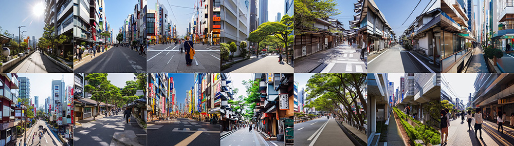
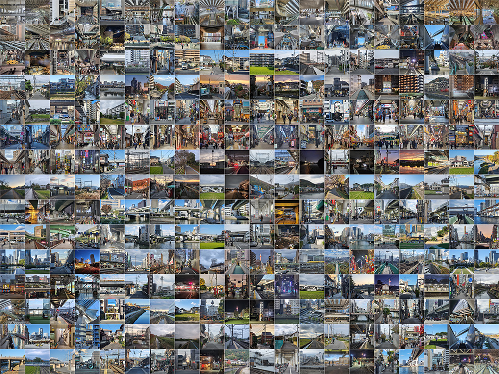
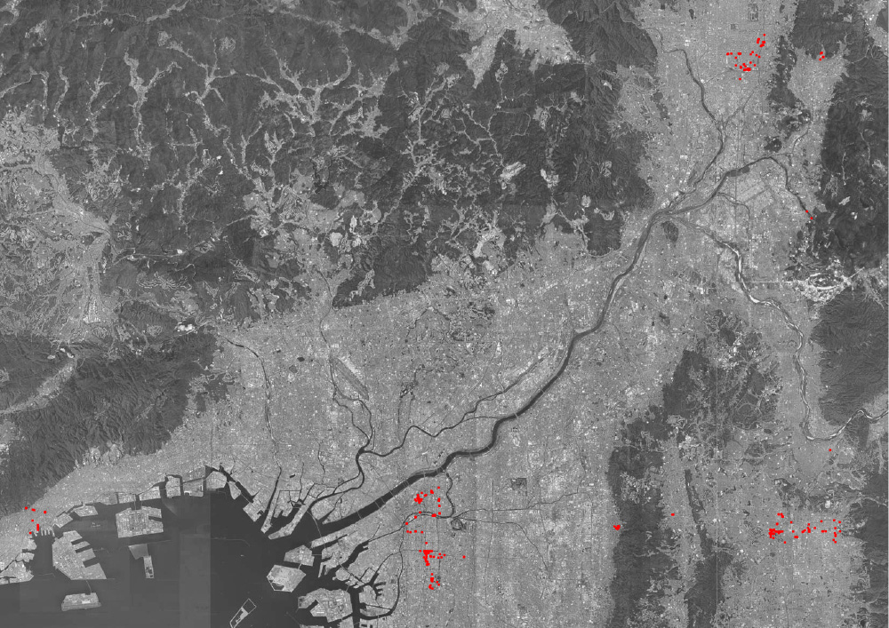
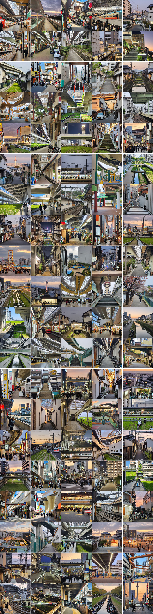

SYNTHETIC KANSAI 合成関西

This pop-up exhibition at Naramachi Center (奈良市ならまちセンター) demonstrated my artistic research progress during my 2024 residency at the Space Department Nara.
It trains AI image models to synthesize and reimagine Kansai urban spaces based on curated datasets of my urban photography.
The research addresses two intertwined challenges of architectural and urban imagination in the age of AI:
the feedback loop of cultural biases and stereotypes that are inherent to the internet-sourced training datasets of generative AI models, and the devaluation of
artistic authenticity based on experiential thoughts of our physical surroundings. Both urge us to contextualize AI by embedding our critical observations
into its synthetic urban imagination. The project brought me to Kansai, Japan, a densely urbanized region that are globally known for historical landmarks of tourist sites,
with few online traces of its contemporary urban forms compared to the Tokyo-centric imaginaries of Japanese urbanism.

'Urban space in Japan' samples generated by Stable Diffusion v1.5Based on my interrogation for AI-generated stereotypes of Japanese urban housing, infrastructural systems, public spaces, and commercial typologies, my field research captured 1000+ scenes of local counter-narratives across Osaka, Nara, Kyoto, Kobe, and satellite towns in between. 300 photos are selected to to cover the underrepresented urban identities from the generic AI imagery, including the mixed-form housing blocks of apartment buildings and detached houses with storefronts, urban facilities and pop-up activities under highway bridges, various forms of shopping arcades, semi-indoor urbanism of megastructure transit hubs, and pocket-size rice paddies within suburban housing blocks.


300 selected photos with location marks.The training takes Stable Diffusion XL as the base model and applies LoRA embedding method for flexibility. Each photo is captioned with essential information
of its spatial composition and focused typologies (e.g. a photo of an elevated plaza in front of a megastructure complex),
yet leaving out the exact programs or urban functions for AI to recompose. The resulting models incorporeate my training datasets into alternative imaginaries
of a 'Kansai City', often with unexpected scenes of remixed and recomposed urban spatial forms.
Stay Tuned for update...
